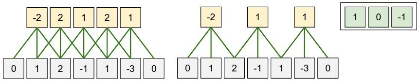
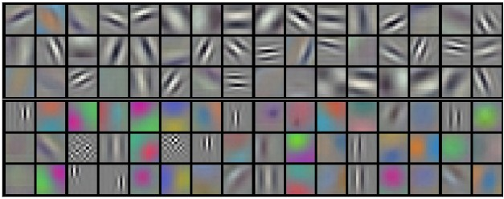

Architectures, Convolution/Pooling Layers
目录
convolutional neural networks: Architectures, Convolution/Pooling Layers
Convolutional Neural Networks(CNNS/ConvNets)
卷积神经网络(convolutional neural networks)和传统的神经网络非常相似，都是由 很多的具有权重值和偏置的神经元组成，这些权值和偏置都是可以通过反向传播算法进行 学习的。每个神经元接受上一层输入数据，然后和本神经元权值进行点乘，最后跟着一个 可选的非线性变幻。整个网络可以看作是一个可导的得分函数，将输入的图像原始像素值 映射到分类类别的的得分。并且同样拥有一个损失函数(SVM/Softmax)，用来优化整个 网络。
那么卷积神经网络具有哪些不同呢？首先假设输入的数据都是图像，这样可以利用图像的 一些特有特征用来设计整个神经网络结构。这些结构可以使得向前计算得分更为有效，可 以有效的减少整个网络的参数。
Architecture Overview
传统神经网络接受输入，然后通过向前传播通过隐含层。每个隐含层都有一些神经元组成， 每个神经元都与上一层的所有神经元是全链接的，但是层间的神经元是没有链接。最后一 层全链接层叫做输出层(output layer)；分类模型，输出层的值代表分类类别得分。
传统神经网络对输入数据维度较大的时候并不太使用。面对 CIFAR-10 ，图像的大小仅 仅为 [32,32,3] ，第一层一个全链接神经元的权值大小就是 3072 维。显然如果输入 图像维度较大的时候，参数维度将会会变得非常大。这样的模型很容易在数据较少的时候 形成过拟合，并且浪费大量的算力。
3D 卷积神经元可以针对输入是图像时候进行结构优化，从而可以减少参数维度。 ConvNet 将一层神经元组织成三维：宽，高，深。并且每个神经元都只与上一层一个很 小区域的神经元链接，而非全链接。例如:CIFAR-10 输入的图像为 [32,32,3] ，通过卷 积神经网络最后输出为 [1,1,10] 向量。

左图：传统 3 层神经网络。右图：卷积神经网络将神经元组织成 3 维(宽高深)。ConvNet 将 输入的三维图像映射到三维神经元激活值。红色输入层为输入图像。
卷积神经网络(ConvNet)由多层神经元组成。每个神经元具有简单的 API：将输入的三维 输入矩阵映射到三维输出矩阵，映射关系由具有可调参数或者非可调参数的可导函数组成。
ConvNet Layers
卷积神经网络(ConvNet)由一系列卷积网络层组成，每一层将输入的三维矩阵映射为另外 一个三维矩阵，每层都可以看作一个可导函数。主要有三种网络层：卷积层(Convolutional Layer)，采样层(Pooling Layer)和全链接层(Fully-Connected Layer)。通常将三 种层堆叠形成卷积网络结构。
针对 CIFAR-10 分类问题，常见的一个简单的卷积结构为 [INPUT-CONV-RELU-POOL-FC] ：
- INPUT[32,32,3] 为输入的三维图像像素，宽为 32 像素，高为 32 像素，RGB 三通 道。
- CONV Layer 输出的神经元值由局部的输入神经元值和权重进行点乘，输出的维度为 [32,32,12] ，12 为卷积核数量。
- RELU Layer 会执行神经元级的激活函数， \(max(0,x)\) ，该操作不会改变输入矩阵 维度，还是 [32,32,12] 。
- POOL Layer 为沿着空间维度(高宽)的下采样操作(downsampling)，结果为 [16,16,12] 。
- FC(fully-connected) Layer 计算最后的分类得分，最后为 [1,1,10] 三维矩阵， 对应着 10 个分类得分。
基于上述结构，ConvNet 将原始的图像像素通过一层一层的映射最后得到分类得分。可以 看到上述的各层，有的层有参数，有的层不具有参数。 CONV/FC 层一般执行将输入的 向量映射到输出向量，该映射结果由输入向量和参数决定(神经元权重/偏置)。 RELU/POOL 层执行一个规定的映射，并不具有参数。 CONV/FC 的参数可以通过梯度 下降算法学习得到。
总结 ：
- 上述 ConvNet 结构由一系列网络层组成的最简单的网络。
- 卷积神经网络由三种不同类型的网络层组成： CONV/FC/RELU/POOL/…
- 每层接收一个三维矩阵，通过可导函数映射成一个三维矩阵。
- 有些层具有参数(CONV/FC)，有些层不具有参数(RELU/POOL)。
- 有些层具有超参(CONV/FC/POOL)，有些层不具有超参(RELU)。

上图为一个稍微复杂点的卷积网络的激活值图示。初始矩阵为原始图像像素(左边)。右边 为分类得分。中间为每一层的输出激活值图示。
后面将详细介绍每一层的细节和超参。
Convolutional Layer
卷积层是构建卷积神经网络的主要组成部分，承担着大量的计算工作。为了描述情况，这里 将三维矩阵的维度成为宽，高，通道。
- Overview and intuition without brain stuff
不使用任何的大脑或者神经元的类比，首先讨论卷积层计算过程。卷积层由多个具有可学习 参数的卷积核(filters)组成。卷积核是一个具有很小空间域（宽高空间），但是通道维 度和输入的通道维度相等的三维矩阵。例如：常见第一层的卷积核具有的维度为 [5,5,3] (5 像素宽，5 像素高，3 个颜色通道)。向前传播的过程中，将卷积核在输入图像上进行移 动(卷积操作)，宽高两个维度移动，并且在每个移动到的位置上作整个卷积核与卷积核覆盖 的图像局部像素作点乘。最终，会产生一个二维激活矩阵(activation map)，对应的是卷 积核在图像的对应空间位置的激活值。直观上讲，卷积核会在看到某种视觉特征的时候激活， 例如在第一层某个朝向边缘，或者在高层具有轮状的图像。如果我们具有多个卷积核，那么 卷积层向前传播后会得到多个二维激活矩阵，将多个激活矩阵组成三维激活矩阵作为输出。
- The brain view
从大脑/神经元角度来看的话，可以将输出的三维激活矩阵看作是该层神经元对于输入的局 部信号的反应，并且多个水平神经元同用同一套激活参数(同一个卷积核移动)。
- Local Connectivity
传统神经网络中，每个神经元会和上一层的神经元全链接。在输入数据维度加大情况下，由 于会具有过多的参数，使得该种链接方式并不实用。卷积层中，每个神经元只和上一层一小 块局部空间内的神经元链接。该空间的大小控制着链接的多少，是一个超参，叫做神经元感 受野(receptive field)，等于卷积核的大小(宽高维度)。通道维度一般都等同于输入的 通道数。需要强调一下，在对待宽高空间维度上和对待通道维度上是不一样的：链接在空间 维度上是局部的，但在通道维度上是全链接的。
例子 1：假设输入图像为 [32,32,3] ，卷积核感受野为 [5,5] ，那么卷积层中的每一个 神经元与上一层对应的 [5,5,3] 个神经元具有链接，则卷积核的参数为 5*5*3=75(+1 bias) 。
例子 2：假设输入的图像为 [16,16,20] ，假设使用感受野为 [3,3] 的卷积核。那么每 个神经元与上一层对应的 [3,3,20] 个神经元具有链接。
在通道维度，卷积核与输入的通道维度一样。


左图：红色为输入图像([32,32,3] CIFAR-10 图像)和一个卷积操作。每个卷积核都只与 输入图像的局部神经元链接，但是与该局部空间内的神经元在通道维度上是全部有链接的。 右图：神经元内部的计算方式不变，还是输入矩阵与权重进行点乘，跟着非线性变换。
- Spatial arrangement
上述讨论了，卷积层中每个神经元与上一层的神经元是如何链接的。那么卷积层的神经元是 如何组织和排列的，并且如何控制神经元的个数。主要由三个超参控制：通道深度 (depth)，平移步长(stride)和填充(zero-padding)：
- 输出矩阵的 通道深度 ：等于卷积核的数量，每个卷积核用于在输入数据中匹配不同的 数据模板。在同一个空间局部区域不同卷积核计算的激活值以通道深度维度排列。
- 设置 平移步长 用来控制卷积核在空间上移动长度。设置为 1 的时候，卷积核一次移动 一个像素点。增大平移步长，卷积核跳过的像素越多，最后的激活矩阵越小。
- 可以通过在输入矩阵边缘填充 0 来补偿矩阵在边缘卷积损失的一些激活值。 0 值填充 的多少也是超参。该参数可以用来控制最终输出的激活矩阵的空间大小。后续可以看到通 过填充可以使得输出的矩阵和输入矩阵维度一致。
可以通过以输入矩阵维度 \(W\) 作为输入的函数来计算最终的输出矩阵的空间维度大小，卷 积核感受野假设为 \(F\) ，步长设为 \(S\) ，0 值填充的数量为 \(P\) 。那么输出的激活矩阵的 空间维度为 \((W - F + 2P)/S + 1\) 。例如，输入为 [7,7] 矩阵，采取步长为 1，[3,3]的 卷积核输出为[5,5]；如果采取 2 作为步长，则输出激活矩阵为[3,3]。

本例中采取一维空间向量(x-axis)，感受野为 F=3，输入矩阵维度为 W=5，采取 P=1 的 0 值填 充。左图：采取步长为 S=1 的卷积操作，输出维度为(5-3+2)/1+1=5。右图：采取步长为 2 的卷积操作，输出维度为(5-3+2)/2+1=3。右上角为卷积核权值，偏置为 0.
Use of zero-padding 在左图中，由于采取了 1 个像素填充。使得输入维度为 5，输出 维度也是 5。如果没有填充输出维度就变成 3。通常在步长为 1 时，将填充维度设为 \(P=(F-1)/2\) ，可以保证输出空间维度和输入空间维度相同。
Constraints on strides 这些超参有一定的限制，不是随机组合就可以使用。例如，输 入为 W=10，没有填充 P=0，卷积维度为 F=3，那么是不能使用 S=2 的步长的；因为 (W-F+2P)/S+1=(10-3+0)/2+1=4.5。表示卷积操作无法完成。一般卷积网络库会进行一定的 填充或者对输入进行裁剪。
Real-world example Krizhevsky et al AlexNet 赢得了 2012 年的 ImageNet 挑战赛。输入 图像维度为 [227,227,3] 。第一层卷积层，采取感受野为 F=11，步长 S=4，没有填充 P=0 的卷积操作，(227-11)/4+1=55；共采取 96 个卷积核；输出为 [55,55,96] 。55*55*96 个神经元，每个神经元都与输入层的 [11,11,3] 个神经元链接，并且深度通道排列的 96 个神经元链接的是相同的一个 [11,11,3] 区域，但是具有不同的权值。其中，非常有趣 的一点是，论文中说输入的图像维度是 [224,224] ，该维度的图像无法直接执行上述卷 积操作，因为(224-11)/4+1 并不是一个整数。使得很多人非常困惑，可能是作者采取了 3 个 0 值填充，但是论文中确忘了提起。
- Parameter Sharing
参数共享策略是卷积神经网络用来控制参数数量的方法。在上述 AlexNet 中，第一层具有 55*55*96=290400 个神经元，每个神经元具有 11*11*3=363 个权值和 1 个偏置参数。那么， 第一层卷积层就具有 290400*364=105705600 个参数。该参数数量太大，不利于模型训练。
事实证明如果引入一个合理的假设，可以有效的降低参数数量：如果在某个空间点(x,y)检 测出的有效特征，应该在别的空间点(x_2,y_2)也有效。也就是说，同一个卷积核在不同的 空间平面上移动采取的是同样的权值和偏置。换句话说，表示一个二维激活矩阵为通道深度 的切片(depth slice [55,55,96]的激活矩阵就由 96 个深度切片，每个大小为[55,55])， 那么在同一个通道深度的切片上采用相同的权值和偏置。基于上述权值共享假设，那么 AlexNet 的第一层卷积层具有的 96 个卷积核的参数大小为 96*11*11*3=34848 独立的参数 和 96 个偏置。

AlexNet 学习到的卷积核。每个卷积核大小为[11,11,3]，每个卷积核在 55*55 深度切片的 神经元上共享。权值共享的假设具有一定合理性：因为图像具有一定的不变性，如果在图像 上某个位置水平边缘对于检测非常重要，那么在其他位置上也一定有用。那么就不需要在 [55,55] 的空间位置上都学习一个水平边缘提取卷积核。
应该注意到的是，上述的权值共享假设在其他一些情况下并不成立。例如，如果输入的图像 已经做过中心化处理，那么可能只需要在一些空间上作特征检测，那么就可以设计一个更为 专用的卷积网络，只在对应的区域作对应的特征检测。那么就可以将这种不做全局卷积的网 络层叫做局部链接层(Locally-Connected Layer)。
- Numpy examples
举个例子用来详细描述上述的计算过程。假设输入的为 numpy 数组 \(X\) ：
- 那么深度列向量在点(x,y)的激活值为 X[x,y,:]
- 深度切片，或者深度为 d 的激活矩阵为 X[:,:,d]
Conv Layer Example 假设输入的矩阵 \(X\) 形状为 X.shape: (11,11,4) 。并且并不使 用 0 值填充(P=0)，卷积核大小为 F=5，采取步长 S=2。那么输出矩阵的空间的大小为 (11-5)/2+1=4，长宽为 4 个像素。那么输出激活矩阵为 \(V\) ,有如下公式：
- V[0,0,0] = np.sum(X[:5,:5,:]*W_0) + b_0
- V[1,0,0] = np.sum(X[2:7,:5,:]*W_0) + b_0
- V[2,0,0] = np.sum(X[4:9,:5,:]*W_0) + b_0
- V[3,0,0] = np.sum(X[6:11,:5,:]*W_0) + b_0
上述的操作 * 代表逐元素相乘。 W0 表示神经元的权值向量， b0 代表神经元的偏 置。 W0 的形状为： W0.shape: (5,5,4) ，卷积核空间大小为 5，深度和输入矩阵深度 相同为 4。在不同的元素点执行类似传统神经网络的点乘计算方法，并且都使用同一套卷积 参数(权重和偏置)。高轴上每次移动步长为 2。第二个激活矩阵，计算方式如下：
- V[0,0,1] = np.sum(X[:5,:5,:]*W_1) + b_1
- V[1,0,1] = np.sum(X[2:7,:5,:]*W_1) + b_1
- V[2,0,1] = np.sum(X[4:9,:5,:]*W_1) + b_1
- V[3,0,1] = np.sum(X[6:11,:5,:]*W_1) + b_1
- V[0,1,1] = np.sum(X[:5,2:7,:]*W_1) + b_1 (宽轴移动)
- V[2,3,1] = np.sum(X[4:9,6:11,:]*W_1) + b_1 (高宽轴移动)
上述计算第二个深度维度的激活矩阵，所以深度维度为 1，并且使用 W_1 和 b_1 作为权值向量和偏置。
- Summary
- 接收三维矩阵 W_1 * H_1 * D_1
- 需要 4 个超参：
- 卷积核数量 K
- 卷积核大小 F
- 平移步长 S
- 0 值填充数量 P
- 映射成一个三维输出矩阵 W_2 * H_2 * D_2
- W_2 = (W_1 - F + 2 * P)/S + 1
- H_2 = (H_1 - F + 2 * P)/S + 1
- D_2 = K
- 由于权值共享策略，每个卷积核有 F*F*D_1 个权重参数。总共有（F*F*D_1）*K 个权重参 数和 K 个偏置参数
- 输出的矩阵第 d 个深度切片(大小 W_2*W_2)为第 d 个卷积核在输入矩阵上执行步长 S 的卷 积操作获得的，并使用第 d 个偏置参数。
一个常见的超参设置为 F=3, S=1, P=1 。
- Convolution Demo
下图为卷积层的 demo，由于 3D 矩阵较难可视化，下图中（蓝色为输入矩阵，红色为卷积权 值矩阵，绿色为对应的输出矩阵）三维矩阵按深度切片堆叠起来。输入为 W_1=5,H_1=5,D_1=3 ，并且卷积层对应的参数为 K=2,F=3,S=2,P=1 。卷积核大小为 [3,3] ，采取步长为 2 的卷积操作。所以输出矩阵空间维度为 (5-3+2)/2+1=3 。

- Implementation as Matrix Multiplication
卷积操作就是卷积核和输入的局部区域数据进行点乘。一种常见的卷积方法是基于这个计算模式，将整个向前传播变成一个矩阵相乘操作：
- 将输入的图像矩阵中的每一个局部卷积区域可以通过一个工具 im2col 拉伸成列向量。 例如输入是 [227,227,3] ， [11,11,3] 卷积核，步长为 4。将每一个卷积操作的 11*11*3 个 像素拉伸为一个 11*11*3=363 的列向量。在高宽两个维度各有(227-11)/4+1=55 个卷积点， 那么上述拉伸操作最终会得到一个 [363,3025] 二维向量矩阵 \(X_{col}\) 。
- 卷积核的权值简单拉升成列向量即可。例如：96 个[11,11,3]的卷积核，最后会得到一个 [96,363] 的二维矩阵 \(W_{row}\)
- 那么一个卷积层的操作就直接等于一次大的矩阵相乘操作 np.dot(Wrow,Xcol) 。结 果为 [96,3025] 矩阵，为对应的卷积核和对应位置的局部数据的点乘结果。
- 最后将所得结果调整一下大小，获得 [55,55,96] 的二维矩阵。
上述方法的缺点在于需要占用大量的内存。优点在于，可以充分利用矩阵相乘的一些加速方 法(BLAS)。
- 1*1 convolution
有很多论文采取了 [1,1] 卷积操作，例如第一个采取该方法的论文Network in Network。 由于卷积在深度维度上和输入的深度一致，所以 [1,1] 卷积操作可以看作在深度维度上的 点乘。
- Dilated convolutions
Pooling Layer
一般都会在连续的两个卷积层之间插入采样层。作用是逐步的降低整个数据的空间大小，从 而在保留一些信息的情况下，降低参数大小和整个网络的计算量。采样层操作在每个深度切 片上独立执行。常见的采样层使用 [2,2] 采样域，移动步长为 2 的下采样 (downsamples)，可以省略掉 75% 的激活值。
- 接受三维矩阵 [W1,H1,D1]
- 需要两个超参：
- 采样空间大小 F
- 移动步长 S
- 输出一个三维矩阵 [W2,H2,D2]：
- W_2 = (W_1 - F)/S + 1
- H_2 = (H_1 - F)/S + 1
- D_2 = D_1
- 采样层没有参数，因为执行是规定的函数
- 采样层一般不采用 0 值填充
需要注意的是，在实际应用中有两种常用的采样层：F=3，S=2 的重叠采样和 F=2，S=2 的 采样。更大的采样空间大小，对信息损失较大，不适宜使用。
- General pooling
除了最大采样层，也有均值采样和 L2 正则采样等。现在均值采样一般不再使用，因为应用 中效果不如最大值采样好。


下采样沿着空间维度移动，在每个深度切片上独立执行。左图：输入的为 [224,224,64] 的 矩阵，执行大小为 2 的，stride 为 2 的采样，最后得到 [112,112,64] 的三维结果矩阵。 右图：最常见的下采样操作是最大值，图中所示为执行 4 次的最大值采样结果。
- Getting rid of pooling
很多人不喜欢采样层，希望可以去掉。Striving for Simplicity: The All Convolutional Net提出只是用卷积操作的卷积网络结构。通过使用更大的步长来降低模型的表达能力。并 且发现，在训练生成模型时不使用采样层是比较好的，例如 variational autoencoders (VAEs)和 generative adversarial networks(GANs)。
Normalization Layer
同时有很多归一化层提出，用来加速 ConvNet 训练。但是实际应用中，这些归一化操作的 作用较小或者没有，具体的讨论可见：cuda-convnet library api
Full-Connected Layer
全链接层中的神经元和上一层的神经元都有链接。卷积神经网络中常常使用全链接层作为最 终的输出层，输出对应的分类信息。
Converting Fully-Connected Layers to Convolutional Layers
可以注意到的是，全链接层和卷积层的唯一差别就是卷积层中的神经元只与上一层的局部神 经元链接，深度切片中的神经元共享同一套权值和偏置。神经元内部都是执行输入和权值的 点乘，因此有可能全链接层和卷积层可以互相转换：
- 对于任意的卷积层，都有全链接层可以执行相同的计算过程。权值矩阵将非常大，大部分 权值为 0，除了一些具有局部链接的位置；不为 0 的部分都相等，因为权值共享
- 相反的，任意的全链接层都可以转为卷积层。例如全链接层 K=4096，输入为[7,7,512]维 度，对应的卷积层为 F=7，P=0，S=1，K=4096。换句话说，构建一个卷积层的卷积核空间 大小和输入的大小一致，那么输出就是 [1,1,4096] 。
FC->CONV conversion
将全链接层转为卷积层相对来说更为有用。例如，AlexNet 网络结构接受 [224,224,3] 图 像，然后使用一些列卷积层和采样层来降低图像的维度到最后得到 [7,7,512] 的激活矩阵 (使用 5 个采样层，下采样到最后的大小，224/2/2/2/2/2=7)。然后 AlexNet 采用两个具 有 4096 神经元的全链接层，最后一层使用 1000 个神经元的全链接层来计算对应的分类得分。 可以将上述最后的 3 个全链接层都转为卷积层：
- 第一个全链接层接受 [7,7,512] 矩阵，可以采取 4096 个空间大小为 F=7 的卷积核组成的卷 积层，执行全链接层一样的计算过程 [1,1,4096]
- 采取 4096 个空间大小为 F=1 的卷积核组成的卷积层替换第二个全链接层，最后获得 [1,1,4096] 输出矩阵
- 最后一层全链接层可以采取 1000 个空间大小 F=1 的卷积核组成的卷积层，最后获得 [1,1,1000] 的输出。
上述的这些转变可以通过对权值矩阵进行变换，从而实现全链接层到卷积层的转变。卷积层 允许不关心输入图像的大小，都可以执行对应的计算过程。对较大的图像可以看作是对原图 进行不同窗口的移动检测，可以通过一次的卷积网络向前传播完成多个空间位置上的检测。
例如：输入为 [224,224] 的图像，最后经过卷积层获得 [7,7,512] 的激活矩阵。可以看作 是原图做了 32 倍的下采样。那么对一个尺寸为 [384,384] 的图像，经过上述计算过程，最 后获得是 [12,12,512] 激活矩阵，因为 384/32=12。然后经过最后 3 个卷积层，最后获得 [6,6,1000]的得分矩阵，因为(12-7)/1+1=6。获取了[384,384]大小的图像 36 个子图的类别 得分。
[384,384]的图像经过整个卷积网络可以看作是对原图以 32 像素为步长截取 [224,224] 子图， 然后经过卷积网络计算对应得分向量组成的 [6,6,1000] 的得分矩阵。
一次大的卷积计算过程要比多次迭代计算多个小的卷积计算过程要快。这个技巧常用来将一 个图放大，然后经过卷积网络计算，对最后的多个得分结果进行加和平均，能够获取一个更 好的结果。
Net Surgery 用来显示如何使用 caffe 来将一个全链接和卷积层之间的转换。
ConvNet Architectures
可以看到卷积神经网络一般都是由三种网络层组成：卷积层、采样层和全链接层。其次会在 某些层之后增加 RELU 非线性激活函数作为激活层。本节将讨论一下，多个层如何堆叠组成 卷积神经网络。
Layer Patterns
最为常见的卷积神经网络结构由若干组卷积层-激活层-采样层构成，使得输入的原始图像从 高分辨率映射到一个较小的分辨率，然后跟着全链接层。最后的全链接层输出，例如分类类 别得分。即最常见的卷积神经网络结构有如下模式：
INPUT -> [ [CONV -> RELU]*N -> POOL?]*M -> [FC -> RELU]*K -> FC
其中 * 表示重复多次； POOL? 表示可选采样层。一般 /N>=0, M>=0, K>=0/。例如， 如下为一些常见的卷积神经网络结构：
-
INPUT -> FC - 线性分类器， N=M=K=0
-
INPUT -> CONV -> RELU->FC -
INPUT -> [CONV -> RELU -> POOL]*2 -> FC -> RELU -> FC - 每个卷积层都跟着一 个采样层
-
INPUT -> [CONV -> RELU -> CONV -> RELU -> POOL]*3 -> [FC -> RELU]*2 -> FC - 两个卷积层才跟着一个采样层。在网络规模较大、较深时较为实用。因为多个卷积层 堆叠可以提取更为复杂的特征，然后才进入一个信息丢失的采样层。
优先，将多个感受野较小的卷积层堆叠形成一个较大的感受野卷积层。假设堆叠三个 [3,3] 卷积层(层间都有激活函数)。第一层的每个神经元的感受野为 [3,3] ；第二层的每个神经 元的感受野为 [3,3] 个第一层神经元，然后拓展成原始输入的感受野为 [5,5] ；同样，第 三层的神经元具有 [3,3] 的第二层感受野， [7,7] 的原始输入的感受野。如果不使用三个 卷积层堆叠，那么就直接需要一个感受野为 [7,7] 的卷积层，但是这样的卷积核会带来一 些缺点。首先，神经元一般都跟着非线性变换，三个卷积层堆叠使得计算的特征更有表达能 力；其次，假设输入和输出具有 C 个通道，那么可以看到一个 [7,7] 的卷积层将有 C*(7*7*C)=49C^2 个参数；而三个 [3,3] 的卷积层则只有 3*(C*(3*3*C))=27C^2 个参数。 即是说优先将多个小卷积层堆叠形成一个大的卷积层的表达能力优于单独一个大的卷积层， 并且参数更少。一个实际应用中的缺点在于计算反向传播时，需要更多的内存来存储中间结果。
Layer Sizing Patterns
到现在还没有讨论一个网络层的常用超参。本部分首先讨论调整结构大小的常用规则，然后 讨论一下常用的符号：
输入层 应该可以被 2 整除多次。常见的大小为 32(CIFAR-10),64、96(STL-10),或者 224(常见 的 ImageNet 卷积神经网络)，384 或者 512.
卷积层 应该采取小的卷积核([3,3]或者最大[5,5]的)，采取步长为 S=1，采取的填充数量 为可以使得卷积层输入的空间维度大小和输出的空间维度大小一直。即是，当采取 F=3 的卷 积核，使用 P=1 的填充，使得输出和输入的大小维度一直；在 F=5，使用 p=2。对于 F 的卷积核， 一般设置 P=(F-1)/2 填充来保证输出维度和输入维度一致。如果必须采取更大的卷积核(例 如[7,7])，那么一般只在第一层采用。
采样层 主要用来对输入进行空间维度上的下采样。最为常见设置为采取感受野为 [2,2] （F=2）的最大值采样，并且采取步长为 2(S=2)。这种设定会下采样掉大概 75% 的激活值。 另外一种不太常见的设置是采取感受野为 [3,3] ，步长为 2 的最大值采样层。一般再大一 些的采样层并不多见，主要是因为采样区域过大，会导致效果较差。
Reducing sizing headaches 可以看到上述的设置较为好理解和处理，因为卷积层保持输 入的空间大小，采样层用来对空间大小进行下采样。另外一种策略是采取大于 1 的步长，然 后不使用填充策略。必须仔细计算整个卷积神经网络空间大小，并且需要保证各个层的步长 和感受野大小能够正常工作。
Why use stride of 1 in CONV? 在实际应用中，越小的步长效果越好。此外，步长为 1， 将下采样的工作留给采样层执行。
Why use padding? 前面的保证卷积层输入输出空间大小一致可以提高性能。如果卷积层 不采取 0 值填充，只执行合理卷积操作，那么卷积操作会减少空间大小，边缘的信息都会丢 失。
Compromsing based on memory constraints 在一些情况下(尤其是前期的卷积神经网络 结构)，内存的使用会较为快速的占用。例如，对于[224,224,3]的输入图像，采取 3 层 64 个 卷积核组成的卷积层，会参见三个激活矩阵，维度为[224,224,64]，大概总共有 10M 激活值， 72MB 内存使用。现阶段 GPU 的内存依然是瓶颈，需要设计网络的时候做一些妥协。一般都 是在第一层采取更大的卷积核，采取更大的平移步长。
Case studies(LeNet/AlexNet/ZFNet/GoogleNet/VGGNet)
如下是一些经典的卷积神经网络：
- LeNet
- 第一个成功应用的卷积神经网络，Yann LeCun 开发于 1990 年。用于识别邮 票数字。
- AlexNet
- 第一个大规模应用的卷积神经网络结构。AlexNet 提交与 ImageNet 2012 比 赛，top5 错误率降低到 16%。该网络结构和 LeNet 结构相似，但是网络更深，更大，并 且将多个卷积层堆叠在一起(一般卷积层后都跟着一个采样层)。
- ZFNet
- ImageNet 2013 比赛的获胜网络是 ZFNet，该网络是在 AlexNet 上做了对应的 优化调整，包括在中间卷积层采取更多的卷积核，对于第一层采取更小的卷积核和更 小的步长。
- GoogLeNet
- ImageNet 2014 比赛获胜的网络是 GoogLeNet，主要贡献是发明了 Inception Module 卷积结构，可以很大的降低网络参数(4M,AlexNet 具有 60M 参数)。 此外，在卷积网络最上面采取均值采样代替全链接层，避免了全链接层大量的参数， 并且证明大量的参数并不是非常重要。后续有很多版本的 GoogLeNet，最新的为 Inception-v4
- VGGNet
- ImageNet 2014 第二名是 VGGNet，主要贡献是发现了网络的深度是性能好坏 的主要影响因素。最好的网络结构包含了 16 个卷积/全链接网络层，并且执 行同质的卷积操作，从前到后只采取[3,3]卷积和[2,2]最大值采样。VGGNet 的缺点是计算量较大，比且使用了大量的内存和参数(140M)。大多数参数都 是第一层全链接层，并且发现不采取全链接层也不会影响整个网络的性能。
- ResNet
- Residual Network 是 ImageNet 2015 的胜利网络。采取了夸层链接，并且使 用了BatchNormalization。整个网络也没有使用全链接层。读者也可以参考对应的演 示slides和视频video。ResNet 在 ImageNet 上现在是最好的网络结构，实际应用中应 该作为默认网络使用。Identify Mappings in Deep Residual Networks论文针对原始 的 ResNet 提出了一些优化。
- VGGNet in detail
整个 VGGNet 由多个感受野为[3,3]，步长为 1，填充 1 的卷积层和感受野[2,2]，步长为 2 的最 大值采样层组成。如下记录了每个网络层的大小和参数的多少：
INPUT: [224x224x3] memory: 224*224*3=150K weights: 0
CONV3-64: [224x224x64] memory: 224*224*64=3.2M weights: (3*3*3)*64 = 1,728
CONV3-64: [224x224x64] memory: 224*224*64=3.2M weights: (3*3*64)*64 = 36,864
POOL2: [112x112x64] memory: 112*112*64=800K weights: 0
CONV3-128: [112x112x128] memory: 112*112*128=1.6M weights: (3*3*64)*128 = 73,728
CONV3-128: [112x112x128] memory: 112*112*128=1.6M weights: (3*3*128)*128 = 147,456
POOL2: [56x56x128] memory: 56*56*128=400K weights: 0
CONV3-256: [56x56x256] memory: 56*56*256=800K weights: (3*3*128)*256 = 294,912
CONV3-256: [56x56x256] memory: 56*56*256=800K weights: (3*3*256)*256 = 589,824
CONV3-256: [56x56x256] memory: 56*56*256=800K weights: (3*3*256)*256 = 589,824
POOL2: [28x28x256] memory: 28*28*256=200K weights: 0
CONV3-512: [28x28x512] memory: 28*28*512=400K weights: (3*3*256)*512 = 1,179,648
CONV3-512: [28x28x512] memory: 28*28*512=400K weights: (3*3*512)*512 = 2,359,296
CONV3-512: [28x28x512] memory: 28*28*512=400K weights: (3*3*512)*512 = 2,359,296
POOL2: [14x14x512] memory: 14*14*512=100K weights: 0
CONV3-512: [14x14x512] memory: 14*14*512=100K weights: (3*3*512)*512 = 2,359,296
CONV3-512: [14x14x512] memory: 14*14*512=100K weights: (3*3*512)*512 = 2,359,296
CONV3-512: [14x14x512] memory: 14*14*512=100K weights: (3*3*512)*512 = 2,359,296
POOL2: [7x7x512] memory: 7*7*512=25K weights: 0
FC: [1x1x4096] memory: 4096 weights: 7*7*512*4096 = 102,760,448
FC: [1x1x4096] memory: 4096 weights: 4096*4096 = 16,777,216
FC: [1x1x1000] memory: 1000 weights: 4096*1000 = 4,096,000
TOTAL memory: 24M * 4 bytes ~= 93MB / image (only forward! ~*2 for bwd)
TOTAL params: 138M parameters
和一般的卷积神经网络一样，大多数的内存和计算时间都在前部的卷积层，大多数的参数都 在最后的全链接层，第一层全链接层拥有 100M 参数，总共参数才 140M。
Computational Considerations
构建卷积神经网络的最大瓶颈是内存。现代 GPU 只拥有 3/4/6GB 内存，最好的 GPU 才拥有 12G 内 存。这里有三个主要的内存需要关注：
-
内部的激活值矩阵 - 包括正向传播的每一层的激活矩阵和反向传播的梯度值。大多数 的激活值都在卷积层的前几层。在推理阶段，可以通过只记录前一层的激 活值来节约大量的内存。
-
参数维度 - 神经网络的参数，反向传播中的梯度，如果优化算法采取了动能算法， Adagrad 或者 RMSProp 等，还需要额外记录一些 cache。一般需要的内存为 参数规模的三倍。
-
卷积神经网络需要额外内存 - 用来记录输入数据，或者增强版本等。
当网络的规模较大时候，可以通过减少 batch 的样本数量来降低内存使用情况，因为大多数 的内存都是激活矩阵消耗的。